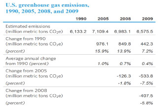
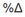
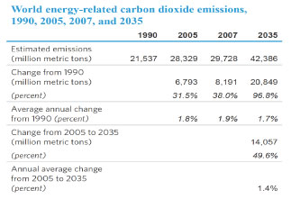

{kind=link}
{kind=link}
Emissions of Greenhouse Gases in the U. S.
Release Date: March 31, 2011 | Next Release Date: Report Discontinued | Report Number: DOE/EIA-0573(2009)
1. Greenhouse Gas Emissions Overview
1.1 Total emissions
Total U.S. anthropogenic (human-caused) greenhouse gas emissions in 2009 were 5.8 percent below the 2008 total (Table 1). The decline in total emissions—from 6,983 million metric tons carbon dioxide equivalent (MMTCO2e) in 2008 to 6,576 MMTCO2e in 2009—was the largest since emissions have been tracked over the 1990-2009 time frame. It was largely the result of a 419-MMTCO2e drop in carbon dioxide (CO2) emissions (7.1 percent). There was a small increase of 7 MMTCO2e (0.9 percent) in methane (CH4) emissions, and an increase of 8 MMTCO2e (4.9 percent), based on partial data, in emissions of man-made gases with high global warming potentials (high-GWP gases). (Draft estimates for emissions of HFC and PFC substitutes for ozone-depleting substances in 2009 are included; 2008 data are used for emissions of other high-GWP gases.) Emissions of nitrous oxide (N2O), on the other hand, fell by 4 MMTCO2e (1.7 percent).
The decrease in U.S. CO2 emissions in 2009 resulted primarily from three factors: an economy in recession, a particularly hard-hit energy-intensive industries sector, and a large drop in the price of natural gas that caused fuel switching away from coal to natural gas in the electric power sector.
Methane emissions totaled 731 MMTCO2e in 2009 (Figure 1), up by 7 MMTCO2e (0.9 percent) from 2008. Increases in energy-related methane emissions—largely from underground coal mining—were offset by decreases in emissions from agricultural sources. Methane emissions from waste management systems rose by 7 MMTCO2e, while industrial emissions declined by 0.4 MMTCO2e.
Emissions of nitrous oxide dropped by 4 MMTCO2e (1.7 percent) to 220 MMTCO2e. The decrease came mainly from a reduction in energy-related emissions, as well as declines in industrial-related and agricultural nitrous oxide emissions.
Based on a partial estimate, U.S. emissions of high-GWP gases totaled 178 MMTCO2e in 2009—8 MMTCO2e (4.9 percent) above the 2008 level. Emissions of hydrofluorocarbons (HFCs) rose by 7 MMTCO2e (5.4 percent) from 2008 to 2009.
{kind=link}

1.2. Energy-related carbon dioxide emissions by fuel and end use
Energy-related CO2 emissions dominate total U.S. greenhouse gas emissions (Figure 1). The figures below show the shares of energy-related CO2 emissions accounted for by major energy fuels and by energy sectors.
Petroleum is the largest fossil fuel source for energy-related CO2 emissions, contributing 43 percent of the total (Figure 2).
{kind=link}
Coal is the second-largest fossil fuel contributor, at 35 percent. Although coal produces more CO2 per unit of energy produced than petroleum does (i.e., coal has a higher carbon intensity than petroleum), petroleum consumption—in terms of British thermal units (Btu)—made up 45.0 percent of total fossil fuel energy consumption in 2009, as compared with coal's 25 percent.
Natural gas, with a carbon intensity that is about 55 percent of the carbon intensity of coal and 75 percent of the carbon intensity of petroleum, accounted for 30 percent of U.S. fossil energy use in 2009 but only 22 percent of total energy-related CO2 emissions.
In Figure 3, emissions are divided into three categories: emissions from the direct use of fossil fuels in homes (for example, natural gas for heating), commercial buildings, and industry; emissions from fuel use for transportation (principally, petroleum); and emissions from the conversion of primary energy to electricity in the electric power sector.
{kind=link}
The electric power sector is the largest source, accounting for 40 percent of all energy-related CO2 emissions. The electric power sector consists of those entities whose primary business is the production of electricity.
The transportation sector is the second-largest source, at 34 percent of the total. Those emissions are principally from the combustion of motor gasoline, diesel fuel, and jet fuel.
Direct fuel use in the residential and commercial sectors (mainly for heating) and the use of fuels to produce process heat in the industrial sector together accounted for 26 percent of total CO2 emissions in 2009.
1.3 Decomposition of U.S. greenhouse gas changes
While the U.S. economy declined by 2.6 percent in 2009, a 5.8-percent decrease in total greenhouse gas emissions meant that U.S. greenhouse gas intensity decreased by 3.3 percent from 2008 to 2009.
Because energy-related CO2 is such a large component of greenhouse gas emissions, it is helpful to analyze energy-related CO2 emissions by using an equation known as the Kaya identity. The Kaya identity relates percent changes in energy-related CO2 emissions to changes in the economy through the following approximation:
| where  represents percentage change. |
As indicated in Figure 4, energy-related CO2 emissions have declined in every year since 2005, with the exception of 2007. Although this is not a long period of time, it is instructive to examine the reasons for the change in trend as compared with the period from 1990 to 2005. A lower rate of economic growth from 2005 to 2009 (averaging 0.5 percent per year, as compared with the average of 3.1 percent per year from 1990 to 2005) is a key driver of the changing trend in emissions.
{kind=link}
Over both periods, the energy intensity of the economy declined by an average of 1.9 percent per year, as the trend toward a service-oriented, post-industrial U.S. economy continued. In contrast, a drop in the carbon intensity of the U.S. energy supply may represent a new trend: from 1990 to 2005, carbon intensity increased on average by 1.0 percent per year, but from 2005 to 2009 it fell by an average of 1.9 percent per year, as natural gas was increasingly substituted for coal, and renewable electricity generation continued to grow. In combination, these factors resulted in a 7.1-percent decline in energy-related CO2 emissions from 2008 to 2009 (Table 2).
1.4. Greenhouse gas emissions in the U.S. economy
Figure 5 illustrates the flow of U.S. greenhouse gas emissions in 2009, from their sources to their end uses. The left side shows CO2 quantities by fuel sources and quantities for other gases; the right side shows their distribution by sector. The center of the diagram indicates the split between CO2 emissions from direct fuel combustion and those from electricity conversion. Adjustments indicated at the top of the diagram for U.S. territories and international bunker fuels correspond to greenhouse gas reporting requirements developed by the United Nations Framework Convention on Climate Change (UNFCCC) (see also Table 3).
{kind=link}
CO2. CO2 emission sources include energy-related emissions (primarily from fossil fuel consumption) and emissions from industrial processes. The energy subtotal (5,426 MMTCO2e) includes petroleum, coal, and natural gas consumption and smaller amounts from nonbiogenic municipal solid waste and some forms of geothermal power generation. The energy subtotal also includes emissions from nonfuel uses of fossil fuels, mainly as inputs to other products. Industrial process emissions (87 MMTCO2e) include CO2 stripped from natural gas and flared natural gas, cement manufacture, limestone and dolomite calcination, soda ash manufacture and consumption, CO2 manufacture, and aluminum production. The sum of the energy subtotal and industrial processes equals unadjusted CO2 emissions (5,513 MMTCO2e). The energy component of unadjusted emissions can be divided into direct fuel use (3,265 MMTCO2e) and fuel converted to electricity (2,160 MMTCO2e).
Non-CO2 gases. Methane (731 MMTCO2e) and nitrous oxide (220 MMTCO2e) sources include emissions related to energy, agriculture, waste management, and industrial processes. High-GWP gases (178 MMTCO2e) include hydrofluorocarbons (HFCs), perfluorocarbons (PFCs), and sulfur hexafluoride (SF6). These gases have a variety of uses in the U.S. economy, including as refrigerants, insulators, solvents, and aerosols; as etching, cleaning, and firefighting agents; and as cover gases in various manufacturing processes.
Adjustments. In keeping with the UNFCCC, CO2 emissions from U.S. Territories (47 MMTCO2e) are added to the U.S. total, and CO2 emissions from fuels used for international transport (both oceangoing vessels and airplanes) (113 MMTCO2e) are subtracted to derive total U.S. greenhouse gas emissions (6,576 MMTCO2e).
Emissions by end-use sector. CO2 emissions by end-use sector are based on EIA's estimates of energy consumption (direct fuel use and purchased electricity) by sector and on the attribution of industrial process emissions by sector. CO2 emissions from purchased electricity are allocated to the end-use sectors, based on their shares of total electricity sales. Non-CO2 gases are allocated by direct emissions in those sectors plus emissions in the electric power sector that can be attributed to the end-use sectors on the basis of electricity sales.
Residential emissions (1,186 MMTCO2e) include energy-related CO2 emissions (1,172 MMT) and non-CO2 emissions (14 MMTCO2e). The non-CO2 sources include methane and nitrous oxide emissions from direct fuel use. Non-CO2 indirect emissions attributable to purchased electricity, including methane and nitrous oxide emissions from electric power generation and SF6 emissions related to electricity transmission and distribution, are also included.
Commercial emissions (1,288 MMTCO2e) include both energy-related CO2 emissions (1,012 MMT) and non-CO2 emissions (276 MMTCO2e). The non-CO2 emissions include direct emissions from landfills, wastewater treatment plants, and commercial refrigerants, and emissions of methane and nitrous oxide from stationary combustion. Non-CO2 indirect emissions attributable to purchased electricity, including methane and nitrous oxide emissions from electric power generation and SF6 emissions related to electricity transmission and distribution, are also included.
Industrial emissions (2,240 MMTCO2e) include CO2 emissions (1,505 MMT)—which can be broken down between combustion (1,418 MMT) and process emissions (87 MMT)—and non-CO2 emissions (735 MMTCO2e). The non-CO2 direct emissions include emissions from agriculture (methane and nitrous oxide), coal mines (methane), petroleum and natural gas pipelines (methane), industrial process emissions (methane, nitrous oxide, HFCs, PFCs, and SF6), and direct stationary combustion emissions of methane and nitrous oxide. Non-CO2 indirect emissions attributable to purchased electricity, including methane and nitrous oxide emissions from electric power generation and SF6 emissions related to electricity transmission and distribution, are also included.
Transportation emissions (1,861 MMTCO2e) include energy-related CO2 emissions from mobile source combustion (1,757 MMT) and non-CO2 emissions (104 MMTCO2e). The non-CO2 emissions include methane and nitrous oxide emissions from mobile source combustion and HFC emissions from the use of refrigerants for mobile source air-conditioning units.
1.5. U.S. emissions in a global perspective
Total U.S. energy-related CO2 emissions in 2007 (including nonfuel uses of fossil fuels) are estimated at 6,022 MMT—about 20 percent of the 2007 world total for energy-related CO2 emissions, estimated at 29,728 MMT (Table 4).
CO2 emissions related to energy use in the mature economies of countries that are members of the Organization for Economic Cooperation and Development (OECD)—including OECD North America, OECD Europe, Japan, South Korea, and Australia/New Zealand—were estimated at 13,711 MMT in 2007, or 46 percent of the world total, with the remaining 54 percent of worldwide energy-related CO2 emissions (16,017 MMT) estimated to have come from non-OECD countries (Figure 6).
{kind=link}

In EIA's International Energy Outlook 2010 (IEO2010) Reference case, projections of energy use and emissions are sensitive to economic growth rates and energy prices. Projections for a range of alternative growth and price scenarios are presented in IEO2010.
U.S. energy-related CO2 emissions are projected to increase by an average of 0.2 percent per year from 2007 to 2035 in the Annual Energy Outlook 2011 (AEO2011) Reference case, while emissions from the non-OECD economies (IEO2010 Reference case) grow by 1.7 percent per year. Both rates are lower than previous projections as a result of the 2008-2009 global recession and newly enacted energy policies. Consequently, the U.S. share of world CO2 emissions is projected to fall to 15.8 percent (6,320 MMT out of a global total of 39,975 MMT) in 2035 (Figure 7).
{kind=link}
China's share of global energy-related CO2 emissions is projected to grow from 21 percent in 2007 to 31 percent in 2035, and China accounts for 56 percent of the projected increase in world emissions over the period. India accounts for the second-largest share of the projected increase, 7 percent.
1.6. Recent U.S. and international developments in global climate change
United States: Federal actions
U.S. Environmental Protection Agency
Rules for Mandatory Reporting of Greenhouse Gases by 31 industries and emissions sources were finalized by the U.S. Environmental Protection Agency (EPA) in October 2009.1 Final rules and methods were proposed in April 2010 for a second group of industries: oil and natural gas systems; five industries that emit fluorinated greenhouse gases (GHGs); and facilities that inject and store CO2 underground for the purposes of geologic sequestration or enhanced oil and gas recovery. The rules were finalized in November and December 2010, with data collection for this second group beginning in January 2011. Reporting rules for the remaining sources from the original proposed rule that were not finalized in October 2009 were finalized in June 2010. This batch of final rules included magnesium production, underground coal mines, industrial wastewater treatment, and industrial landfills. However, the EPA has not acted to finalize the proposed rules for ethanol production, food processing, and coal suppliers.
In December 2009, the EPA issued its final endangerment and cause or contribute findings for greenhouse gas emissions from light-duty vehicles, classifying them as a danger to public health and welfare. As a result, the EPA and the U.S. Department of Transportation's National Highway Traffic Safety Administration (NHTSA), in April 2010, jointly published Corporate Average Fuel Economy (CAFE) and GHG emissions standards to regulate emissions from light-duty vehicles of model years 2012-2016.
In May 2010, a Presidential memo declared that the rulemaking to set standards for light-duty vehicles of model years 2017-2025 would begin, and also directed the EPA and NHTSA for the first time to draft efficiency rules for medium- and heavy-duty engines and vehicles.2 A Notice of Intent to conduct a joint rulemaking on light-duty vehicles for model years 2017-2025, which includes the Agencies' initial assessment of a potential future standard, was released in September 2010.3 Proposed rules covering model years 2014-2018 were announced in October 2010. Also in May 2010, the EPA published its Tailoring Rule, which details the Agency's plans to begin regulating GHG emissions from large industrial GHG sources, including power generation facilities, industrial boilers, and oil refineries.4 The EPA began requiring Clean Air Act (CAA) permits for stationary GHG sources under the Prevention of Significant Deterioration (PSD) requirements of the CAA in January 2011.5 In August 2010, the EPA announced plans to amend or take over State permitting operations in cases where the State Implementation Plan (SIP) for PSD permitting did not adequately address GHG emissions, as would be required by the CAA.6
Other Federal agencies and offices
Implementation of Executive Order 13514 (EO 13514). The White House Council on Environmental Quality (CEQ) and DOE's Federal Energy Management Program (FEMP) developed guidance and calculation methodologies for Federal agencies to conduct and report their GHG inventories under the requirements of EO 13514, Federal Leadership in Environmental, Energy, and Economic Performance (October 5, 2009). The final guidelines for FY 2008 and FY 2010 inventory submissions were published in October 2010. CEQ and FEMP will continue to update the guidelines and methodologies to cover additional emissions sources and provide improved calculation methods for future inventory years. Individual agencies submitted their Strategic Sustainability Performance Plans in June 2010, detailing their strategies to help reach the overall Federal Government-wide goal to reduce Scope 1 and 2 emissions by 28 percent and Scope 3 emissions by 13 percent.7
New home appliance efficiency standards agreement. In August, a coalition of energy and water efficiency and consumer advocacy groups, along with major home appliance manufacturers and their industry association, announced an agreement to increase the efficiency of Energy Star home appliances and to seek tax credits for the production of super-efficient appliances.
American Recovery and Reinvestment Act. As of September 30, 2010, the close of the government's fiscal year 2010, DOE had used $35.2 billion in Recovery Act appropriations and $7.5 billion in Treasury tax incentive programs to support more than $100 billion in clean energy projects. This funding went to support more than 8,000 projects across the country, selected from among more than 30,000 applications.8
United States: Regional and State initiatives
Regional GHG initiatives. The Western Climate Initiative (WCI) consists of seven western U.S. member States, four Canadian member provinces, and an additional 14 observing States and provinces in the United States, Canada, and Mexico. The U.S. member States hold 19 percent of the total U.S. population and produce 20 percent of U.S. GDP.9 In July 2010, WCI released its comprehensive design strategy, which outlines its plan to reduce regional GHG emissions to 15 percent below 2005 levels by 2020.
State energy and GHG legislation. A number of new energy efficiency, renewable energy, and climate change laws were enacted in States across the country in 2010,10 including: RPS amendments (Maryland increased its solar carve-out, and Colorado increased its solar energy target to 30 percent of total energy production by 2020); an ocean energy development goal (Maine); electric vehicle incentives (Maryland); a carbon tax (Montgomery County, Maryland); a low carbon fuel standard for vehicle fuels (California); energy efficiency standards for utilities (Massachusetts) and for new commercial buildings (California); smart grid policy development (Maine); and planning for reductions in GHG emissions from the transportation sector (Oregon).
In July 2010, the Governors of Rhode Island and Massachusetts signed a Memorandum of Understanding (MOU) on the development of offshore wind energy facilities in the Federal waters off of their coasts. The MOU requires that the States coordinate and collaborate on wind energy efforts in an "area of mutual interest" in their overlapping shared waters.11
International actions
UNFCCC and the Kyoto Protocol
The 15th Conference of the Parties (COP-15) and 5th Meeting of the Parties to the Kyoto Protocol (CMP-5) were held in Copenhagen, Denmark, in December 2009. The main product of the meetings was the Copenhagen Accord, which had been agreed to by 140 of the 192 UNFCCC nations as of November 2010.12 The Accord is a non-binding statement pledging action on:
- A goal to limit global warming to 2 degrees Celsius
- Submission of mitigation goals by individual nations
- Funding $30 billion in "new and additional" financing for mitigation, adaptation, technology development, and capacity building in developing nations over the 2010-2012 period, increasing to $100 billion per year by 2020
- Reporting and verification of national inventories and mitigation actions
- Establishment of a mechanism to use developed country financing in support of efforts to reduce emissions from deforestation and forest degradation and to enhance carbon sinks.
COP-16 and CMP-6 convened from November 29 through December 10, 2010, in Cancun, Mexico. The Parties adopted a package of agreements that reaffirms and builds upon the Copenhagen Accord of 2009. The Cancun Agreements13 include the following actions:
- Reaffirm the Accord's goal to limit global average temperature rise to 2 degrees Celsius above pre-industrial levels
- Formally recognize the reduction pledges made in the Copenhagen Accord for the first time by "taking note" of the pledges made by both developed and developing nations
- Indicate that the Clean Development Mechanism (CDM) and Joint Implementation, by which Annex I nations may use non-Annex I mitigation projects to offset their emissions, will continue beyond 2012
- Create a new "standardized baseline" process for some types of CDM projects
- Set out a reporting framework that continues annual submission of inventories by developed nations and creates a new registry for developing nations to report on mitigation actions that receive international financing and includes general guidelines for reporting autonomous actions
- Provide a framework to develop financing and other policies to Reduce Emissions from Deforestation and Degradation (REDD+) and call upon developing nations to develop national strategies and reference levels for future efforts to reduce deforestation
- Establish the World Bank as interim trustee of The Green Climate Fund, which seeks to raise $100 billion per year from public and private sources by 2020 to support greenhouse gas mitigation efforts in developing countries
- Set up the Cancun Adaptation Framework to formalize and outline efforts to enhance adaptation activities by all UNFCCC members
- Establish the Technology Mechanism to assist developing countries with identification, transfer, and application of appropriate low-carbon technologies.
Montreal Protocol
The United States, Canada, and Mexico continued to move forward with their proposal, first announced in 2009, to amend the Montreal Protocol to include a binding schedule for phasing down production and consumption of 20 hydrofluorocarbons (HFCs). The proposal calls for developed countries to reduce their production and consumption of the 20 HFCs to 15 percent of a 2004-2006 average baseline by 2033, and for developing nations to meet the same level by 2043. The proposal was considered at the 22nd Meeting of the Parties to the Montreal Protocol in Bangkok in November. The United States, Canada, and Mexico also offered a proposal to increase project-based efforts to control emissions from HFC-23 and HCFC-22 production.14 (For more information on domestic efforts to reduce emissions of high-GWP gases, see Chapter 5.)
Major Economies Forum
The 6th, 7th, and 8th Meetings of the Leaders' Representatives to the Major Economies Forum on Energy and Climate Change convened during 2010.15 Representatives of the 17 major economies, the United Nations, and guest smaller nations discussed the path forward after COP-15 in Copenhagen and toward COP-16 in Cancun. Discussions centered around further development of the Copenhagen Accord and goals for progress in Cancun, including an emphasis on monitoring, reporting, verification, and transparency; quick implementation of the Accord's Fast Start Financing provisions; the future of the Kyoto Protocol; and different notions of equity. Separately, a Clean Energy Ministerial meeting track was launched to advance initiatives related to energy supply, energy efficiency, and energy access. The Ministerial met in July to develop steps toward accelerated deployment of clean energy technologies and will meet again in April 2011 in Abu Dhabi.16
Bilateral and multilateral agreements
The U.S. State Department signed two memoranda of understanding (MOU) in 2010 related to cooperation on greenhouse gas emissions. In March, the United States signed an MOU with Brazil establishing a "Climate Change Policy Dialogue," which aims to increase cooperation between the two nations on energy efficiency, capacity building, and combating deforestation.17 In July, the United States and China signed an MOU to cooperate in the development of clean energy and energy efficiency technologies and engage in a policy dialog.18
1.7. Special topic: Energy and carbon initiatives at the U.S. Department of Energy
Under EO 13514, all Federal Government agencies are required to develop integrated sustainability plans that include greenhouse gas emission reductions; efficient water use; waste reduction and pollution prevention; and increased efficiency in buildings, products, and vehicle fleets.19 At the U.S. Department of Energy (DOE), the mission of the Federal Energy Management Program (FEMP) is to facilitate the Federal Government's implementation of sound, cost-effective energy management and investment practices in order to enhance the Nation's energy security and environmental stewardship. Serving its mission, FEMP assists DOE and other agencies in planning and implementing strategies to achieve conservation, efficiency, and renewable energy goals under EO 13514 and other mandates.
DOE has more than 15,000 Federal employees in offices and laboratories around the country. Under the EO 13514 requirement to quantify Agency GHG emissions, DOE calculated a fiscal year (FY) 2008 baseline of 5 MMTCO2e and established a goal of a 28-percent absolute reduction in its emissions by 2020.20
In October 2010, FEMP released its Annual GHG and Sustainability Data Report, Version 1.0 to coincide with the release of the Federal Greenhouse Gas Accounting and Reporting Guidance and Technical Support Document by the White House Council on Environmental Quality. The documents and reporting tool aid Federal agencies in gauging their progress toward goals set under EO 13514 by providing guidance and the means for the necessary data collection.21 The Data Report includes reporting requirements for facility and operational energy and water use, as well as calculation of Federal fleet fuel use, fulfilling previous FEMP requirements. FEMP will continue to release updated versions of the Data Report to aid agencies in realizing their EO 13514 goals. Notable initiatives contributing to DOE's efforts to achieve EO 13514 goals are described below.
DOE Headquarters facilities
DOE Headquarters (HQ) is located in the James Forrestal building in downtown Washington, DC, and in Germantown, MD. The HQ facilities house more than 5,800 of the Agency's Federal and contract employees. Initiatives to increase energy savings and efficiency at DOE HQ buildings include the following.
Solar array
Installed on the roof of the Forrestal building in September 2008, the solar array generates about 235,000 kilowatthours of electricity per year. The array is also important for technology demonstration and testing purposes. In addition to the main configuration, the array contains several examples of solar panel technologies, along with monitoring stations to measure power generation in relation to weather conditions.
Energy savings
In December 2009, DOE entered into an Energy Savings Performance Contract (ESPC) involving a large-scale HQ retrofit project. An ESPC allows DOE to finance the project with minimal initial cost, because the installation costs will be offset by monetary savings associated with reduced resource consumption.22 The project focuses on reducing energy consumption in the Forrestal building and water consumption at the Germantown facilities. Construction is scheduled to be completed by December 2011. The efforts are expected to result in reductions of energy consumption by 22 percent at the Forrestal building and water consumption by 11 percent in Germantown. In spring 2010, the Forrestal corridor lighting system was rewired to allow for all lights, with the exception of emergency lighting, to be turned off during night and weekend hours. This upgrade should reduce energy consumption by about 280,000 kilowatthours per year.
Forrestal west and south buildings cool roofs
DOE has completed a "cool roof" on the cafeteria and plans to complete one for the south building at the Forrestal complex over the summer of 2011. The project includes roof engineering designs that will reflect sunlight and emit heat more efficiently than existing roofs, reducing energy consumption and costs associated with summertime cooling. It also includes solar hot water heating for the cafeteria, energy savings and life-cycle cost evaluation, and other technical and economic analyses.
Other notable DOE projects
During December 2009, DOE awarded 16 new Energy Savings Performance Contracts (ESPCs), including the following.
Savannah River Biomass Steam Plant, Aiken, South Carolina
DOE's Savannah River Biomass Steam Plant is one of the largest of its kind. Originally powered by coal-burning boilers, the project, financed by an ESPC, has replaced the original boilers with two steam boilers powered by the combustion of woody biomass. These upgrades are estimated to save $34 million a year in fuel, operations, and maintenance costs.
Existing Building Assessment Tool
In 2009, DOE continued to use the Existing Building Assessment Tool (EBAT), part of the High Performance Sustainable Building Assessment Tool. EBAT aids in identifying and prioritizing sustainability projects for retrofitting DOE's building stock with energy-efficient technologies.23 DOE's building portfolio currently includes 20 Leadership in Energy and Environmental Design (LEED) certified buildings. LEED is an internationally recognized green building certification system, which verifies that a building was designed and constructed to improve energy savings, CO2 emission reductions, and other environmental factors.24 The assessment tool is being used to identify candidate projects that would enable additional buildings to gain certification.
National Renewable Energy Laboratory, Golden, Colorado
DOE's National Renewable Energy Laboratory (NREL) facility in Golden, Colorado, has begun efforts to achieve net-zero energy consumption. Part of the initiative includes "greening" its data center by consolidating servers from 250 to 50, arranging servers to enable more efficient air flow, and using more energy-efficient methods to cool the air around servers. The efforts will reduce power consumption at the data center by 65 percent.25
Future DOE projects
Data center acceleration campaign
DOE is planning a $2.5 million strategic energy efficiency plan for its information technology infrastructure. The plan emphasizes 41 data centers. FEMP projects a 30-percent energy savings through the implementation of existing technologies under the initiative.26
Biomass generation plant at Oak Ridge, Tennessee
DOE's research facilities in Oak Ridge, Tennessee, will house a biomass steam generation plant, scheduled to be operational in 2011. The project replaces four natural-gas-fired boilers and will eliminate more than 55,000 metric tons of carbon dioxide emissions each year, in addition to reductions in nitrogen oxide and sulfur dioxide emissions.27
1.8. Units for measuring greenhouse gases
Emissions data are reported here in metric units. Metric tons are relatively intuitive for users of U.S. measurement units, because 1 metric ton is only about 10 percent heavier than a short ton.
Throughout this report, emissions of carbon dioxide and other greenhouse gases are given in carbon dioxide equivalents. In the case of carbon dioxide, emissions denominated in the molecular weight of the gas or in carbon dioxide equivalents are the same. Carbon dioxide equivalent data can be converted to carbon equivalents by multiplying by 12/44.
Emissions of other greenhouse gases (such as methane) can also be measured in carbon dioxide equivalent units by multiplying their emissions (in metric tons) by their global warming potentials (GWPs). Carbon dioxide equivalents are the amount of carbon dioxide by weight emitted into the atmosphere that would produce the same estimated radiative forcing as a given weight of another radiatively active gas.
Carbon dioxide equivalents are computed by multiplying the weight of the gas being measured (for example, methane) by its estimated GWP (which is 25 for methane). As indicated in Table 5, the GWP for methane was estimated at 21 in the second scientific assessment and 23 in the third. These changes reflect enhanced knowledge, through climate research, of methane's radiative efficiency. Also, as the level of carbon dioxide in the atmosphere increases, it becomes marginally less potent as a greenhouse gas. Consequently, other gases with lower atmospheric concentrations are relatively more potent. In 2008, the IPCC Working Group I released Errata to its Fourth Assessment Report, Climate Change 2007: The Physical Science Basis.28 The Errata revise the reported GWPs for a small number of high-GWP gases. The GWPs published in the Errata to the Fourth Assessment Report (AR4) were used in the calculation of carbon dioxide equivalent emissions for this report. Table 5 summarizes the GWP values from the Second, Third, and Fourth Assessment Reports.
1.9. Methodology updates for this report
Carbon dioxide
Revised coal and motor gasoline carbon factors have been adopted, based on work done by the U.S. EPA.29
For the first time, EIA is providing estimates of biogenic CO2 emissions from biofuels and bioenergy, based on energy consumption data from EIA's Monthly Energy Review (MER). The estimates are provided in Chapter 6 for informational purposes and are not included in the total emissions estimate, because they are considered to be part of the natural carbon cycle and so are excluded under UNFCCC guidelines.
Methane
Styrene has been dropped as a source of CH4 emissions from the chemicals industry, based on guidance from the 2006 IPCC guidelines. Those emissions have been removed from all years of this inventory.
CH4 emission factors for passenger cars and light-duty vehicles have been revised to the values published in the 2006 IPCC guidelines, resulting in a significant decline in calculated emissions from this source category from 1990 to 2008.
Updates have been made to the specificity of the calculations used to estimate emissions from the production and management of manure, including conducting a State-level analysis of swine manure emissions for the first time. In addition, sheep populations have been separated into those on feedlots and those not on feedlots; and populations of pullets, other chickens, and turkeys have been included in the poultry account for the first time. These updates also affect the estimation of N2O emissions from manure management.
Changes in livestock population data that are used to derive the emissions factors for calculating CH4 emissions from enteric fermentation resulted in an average increase in emissions of 3 percent over the series.
Additional emissions factors, conversion factors, and constants applied to the calculation of emissions related to agriculture and livestock have been updated on the basis of the most recent values published by the EPA or IPCC, as applicable.
For the first time in this report, CH4 emissions from composting and from the combustion of waste are included in the inventory.
Nitrous oxide
Emissions calculations methodologies for direct and indirect emissions of N2O from nitrogen fertilization of agricultural soils and from runoff of fertilizer and manure applied to soils have been revised to align more completely with methods in the 2006 IPCC guidelines. Most notably, the revised IPCC methodology, which accounts for nitrogen in below-ground crop residues but omits biological fixation of nitrogen, has been implemented for the 2009 inventory.
Emissions resulting from manure that is directly deposited on lands by grazing or pasture-raised animals have been transferred from the manure management category to the agricultural soils category, and new sources of indirect emissions from soil leaching and volatization have been included in nitrogen fertilization of soils.
The specificity of direct and indirect emissions from manure management has been improved by implementing State-level calculation of swine emissions and updating the waste management system distributions for dairy cattle and swine to annually variable State-level values.
N2O emission factors for passenger cars and light-duty vehicles have been revised to the values published in the 2006 IPCC guidelines, resulting in a significant decline in calculated emissions from this source category from 1990 to 2008.
Emissions estimates for 2007 and 2008 have been corrected to account for the 2006 closing of the smallest adipic acid plant in the United States, which was the only remaining plant that did not use abatement technology. Also, the N2O emission factor for adipic acid production has been revised to the value published in the 2006 IPCC guidelines.
For the first time in this report, N2O emissions from composting are included in the inventory.
High-GWP gases
Data for 2009 covering the use or production of HFCs, PFCs, and SF6 in industrial applications are not yet available for inclusion in the 2009 GHG inventory. To obtain a total, the 2008 values for those emissions were used. Draft estimates for emissions of HFC and PFC substitutes for ozone-depleting substances are included in Chapter 5. Complete final estimates of those emissions will be available in the EPA's 2009 inventory of greenhouse gas emissions and sinks, to be published in April 2011.30
1.10. Special topic: Beyond carbon dioxide—reducing emissions of black carbon to achieve near-term results
What is black carbon?
Black carbon is an aerosol component of particulate matter formed through the incomplete combustion of fossil fuels, biofuels, and biomass. It is found in both anthropogenic (human-caused) and naturally occurring soot. The science and understanding of black carbon have evolved rapidly over the past decade. This has drawn attention to black carbon's contribution to climate change. Globally, the primary sources of black carbon include emissions from diesel engines, cook stoves, wood fires, and forest fires. In contrast with CO2, which has an atmospheric lifetime of more than 100 years, black carbon remains in the atmosphere for only a few weeks. Therefore, reducing black carbon emissions may be an effective way to slow climate change in the short term. The 20-year GWP of black carbon is estimated at 2,200, with a 100-year GWP of 680.31 Because of its relatively short atmospheric lifetime, the 20-year GWP is considered a more accurate estimate of the climate impact of black carbon emissions.
Black carbon contributes to changes in the atmosphere in two ways. First, when it is suspended in the air it absorbs sunlight and generates heat and can affect regional cloud formation and precipitation patterns, which may have a cooling effect. Second, when deposited on snow and ice, it absorbs sunlight, generating heat and counteracting the usual reflective (cooling) effects of pure snow, thus warming both the air above and the snow and ice below, accelerating melting, and further reducing the reflective power of snow and ice cover. Its warming effects in the polar regions are of particular concern.
In 2010, in the Department of the Interior, Environment and Related Agencies Appropriations Act, the U.S. Congress allocated money for the EPA to conduct a study of black carbon emissions and their possible effects on climate change. The study is due to be published in April 2011.32
Regional sources of black carbon emissions
Since 1950, the United States, Europe, and the former Soviet Union have significantly reduced black carbon emissions from fossil fuel sources.33 U.S. emissions of black carbon—measured as elemental carbon—are estimated to have fallen by 30 percent from 1990 to 2005, when they made up about 6 percent of total world black carbon emissions.34 The primary source of black carbon emissions in the United States is mobile combustion (vehicle fuels), and 90 percent of emissions in this category are from diesel fuel use. Figure 8 shows a breakdown of U.S. black carbon emissions sources in 2001 and projections for 2020. After mobile emissions, biomass combustion is the second-largest source of black carbon emissions in the United States, and its share of the total is expected to grow as diesel emissions continue to be reduced.
Technology has played a major role in reducing black carbon emissions. Important technologies include filters placed in diesel vehicle engines to capture the emissions, fuel switching (e.g., from diesel to natural gas in buses), and cleaner-burning, more efficient cook stoves in developing nations. Today, the majority of black carbon emissions come from developing countries.35 The leading emitters are Asia, Latin America, and Africa.36 China and India, in particular, are responsible for more than one-fourth of global black carbon pollution.37 Significant sources of biomass-related emissions in the developing world include deforestation by burning, wildfires, and savannah burning.38
{kind=link}
Reducing emissions of black carbon
The United States does not have any regulations in force that are directly aimed at reducing black carbon emissions. However, some States have included black carbon emissions and corresponding reduction strategies in their Climate Action Plans.39 Also, Federal rules developed to address particulate matter, a class of criteria pollutant under the Clean Air Act, and smog-forming nitrogen oxide from engines and stationary sources have the added effect of reducing black carbon emissions. Key regulations in effect include National Ambient Air Quality Standards (NAAQS) for airborne particulates, the Clean Air Highway Diesel Rule (2001), the Diesel Emissions Reduction Act (2005), and the Clean Air Visibility Rule (2005).40 These regulations typically require the use of emission control technologies, such as particulate filters, to reduce emissions. The EPA estimates that the rules already finalized will lead to reductions in U.S. emissions of black carbon by 38 percent in 2020 from their 2001 baseline (Figure 8), primarily by achieving additional reductions in the mobile emissions sector.41 The 2020 projection assumes continued implementation of the Clean Air Nonroad Diesel Rule, the Clean Air Highway Diesel Rule, and the Clean Air Interstate Rule, among others. If all areas meet their NAAQS requirements for small-diameter particulater matter (PM2.5), the reduction is projected to reach 42 percent, with total U.S. emissions of black carbon falling to 255,000 metric tons in 2020. The State of Maine estimates that the cost of reducing black carbon emissions through use of ultra-low-sulfur diesel (ULSD) and clean diesel technologies would be $14 per ton CO2e.42
In December 2009, the United States pledged $5 million in funding for the development and implementation of black carbon mitigation strategies for the Arctic.43 The pledge came in the wake of the April 2009 Tromso Declaration, in which the Arctic Council recognized the impacts of black carbon, methane, and other short-lived climate-forcing emissions on climate change in the Arctic.44
International strategies to reduce emissions from deforestation, such as the Reducing Emissions from Deforestation and Forest Degradation (REDD) policies being discussed under the UNFCCC process, could also contribute to black carbon emissions reductions, particularly in the developing world.
Footnotes
1 U.S. Environmental Protection Agency, "Climate Change—Regulatory Initiatives: Greenhouse Gas Reporting Program," website www.epa.gov/climatechange/emissions/ghgrulemaking.html.
2 National Highway Traffic Safety Administration, "NHTSA and EPA To Propose Greenhouse Gas and Fuel Efficiency Standards for Medium- and Heavy- Duty Trucks; Begin Process for Further Light-Duty Standards: Fact Sheet" (May 2010), website www.nhtsa.gov/staticfiles/rulemaking/pdf/cafe/LD_HD_FE_FactSheet.pdf.
3U.S. Environmental Protection Agency and U.S. Department of Transportation, "Notice of Upcoming Joint Rulemaking To Establish 2017 and Later Model Year Light Duty Vehicle GHG Emissions and CAFE Standards" (September 30, 2010), website www.nhtsa.gov/staticfiles/rulemaking/pdf/cafe/2017+CAFE_and_GHG_Notice_of_Intent.pdf.
4U.S. Environmental Protection Agency, "Regulations & Standards," website www.epa.gov/NSR/actions.html; and Pew Center on Global Climate Change, "EPA's "Tailoring' Rule," website www.pewclimate.org/federal/executive/epa-tailoring-rule.
5U.S. Environmental Protection Agency, "Proposed Rules on Clean Air Act Permits for Sources of Greenhouse Gas Emissions Under the Prevention of Significant Deterioration Program," website www.epa.gov/NSR/documents/20100810SIPFIPFactSheet.pdf.
6"Action To Ensure Authority To Issue Permits Under the Prevention of Significant Deterioration Program to Sources of Greenhouse Gas Emissions: Federal Implementation Plan," Federal Register (September 2, 2010), website www.federalregister.gov/articles/2010/09/02/2010-21706/action-to-ensure-authority-to-issue-permits-under-the-prevention-of-significant-deterioration; and "Proposed Rules," Federal Register (September 2, 2010), website www.gpo.gov/fdsys/pkg/FR-2010-09-02/pdf/2010-21706.pdf.
7Scope 1 emissions include direct GHG emissions from sources that are owned or controlled by a Federal agency. Scope 2 emissions include direct GHG emissions that result from the generation of electricity, heat, or steam purchased by a Federal agency. Scope 3 emissions include GHG emissions from sources not owned or directly controlled by a Federal agency, such as vendor supply chains, delivery services, and employee travel and commuting.
8U.S. Department of Energy, Secretary Stephen Chu, "Progress" (email to DOE employees) (October 6, 2010).
9Western Climate Initiative, Design for the WCI Regional Program, "Design Summary and Documentation" (July 27, 2010), p. 3, website http://westernclimateinitiative.org/component/remository/func-startdown/281; and Pew Center on Global Climate Change, "Western Climate Initiative (WCI) Partners Release Comprehensive Strategy to Address Climate Change," website www.pewclimate.org/news/WCI_design/WCI_07_10.
10Pew Center on Global Climate Change, "States News," website www.pewclimate.org/states-regions/news; and Environment Northeast, "2010.01.29- New York Times-Massachusetts Sets Ambitious Energy Standards" (January 1, 2010), website www.env-ne.org/resources/open/p/id/1048.
11Rhode Island Government, "Rhode Island and Massachusetts Sign Agreement To Collaborate on the Development of Offshore Wind in Federal Waters" (July 27, 2010), website http://riclapp.org/news/?p=415.
12United Nations Framework Convention on Climate Change, "Copenhagen Accord," website http://unfccc.int/home/items/5262.php.
13Pew Center on Global Climate Change, "Sixteenth Session of the Conference of the Parties to the United Nations Framework Convention on Climate Change and Sixth Session of the Meeting of the Parties to the Kyoto Protocol" (December, 2010), website www.pewclimate.org/docUploads/cancunclimate-conference-cop16-summary.pdf; and United Nations Framework Convention on Climate Change, "UN Climate Change Conference in Cancun Delivers Balanced Package of Decisions, Restores Faith in Multilateral Process" (December 11, 2010), website http://unfccc.int/files/press/news_room/press_releases_and_advisories/application/pdf/pr_20101211_cop16_closing.pdf.
14United Nations Environment Programme, "Issues for Discussion by and Information for the Attention of the Twenty-Second Meeting of the Parties" (July 9th, 2010), website http://ozone.unep.org/Meeting_Documents/mop/22mop/MOP-22-2E.pdf.
15Major Economies Forum on Energy and Climate, "Past Meetings," website www.majoreconomiesforum.org/past-meetings/.
16Clean Energy Ministerial, "2010 Clean Energy Ministerial," website http://cleanenergyministerial.org/.
17U.S. Department of State, "Secretary Clinton and Brazilian Foreign Minister Amorim Announce Increased Cooperation on Climate Change" (March 3, 2010), website www.state.gov/r/pa/prs/ps/2010/03/137723.htm.
18U.S. Department of State, "U.S.-China Memorandum of Understanding to Enhance Cooperation on Climate Change, Energy and the Environment" (July 28, 2010), website www.state.gov/r/pa/prs/ps/2009/july/126592.htm.
19U.S. Department of Energy, Energy Efficiency & Renewable Energy, "Energy Management at DOE" (May 2010), website www1.eere.energy.gov/femp/about/energymanage.html.
20A. Lawrence, "Implementing Executive Order 13514, Federal Leadership in Environmental, Energy, and Economic Performance at the Department of Energy" (March 2010), website www.hss.energy.gov/nuclearsafety/env/training/eo13514_overview_presentation.pdf, slide 30, "DOE Scope 1 and 2 GHGs."
21Federal Facilities Environmental Stewardship & Compliance Assistance Center, "FEMP Releases Greenhouse Gas Inventory Reporting Tool for Federal Agencies" (October 2010), website www.fedcenter.gov/Announcements/index.cfm?id=16388&pge_id=1854.
22U.S. Department of Energy, Energy Efficiency & Renewable Energy, "Energy Savings Performance Contracts" (September 2010), website www1.eere.energy.gov/femp/financing/espcs.html.
23U.S. Department of Energy, Energy Efficiency & Renewable Energy, FEMP Year in Review 2009 (December 2009), website www1.eere.energy.gov/femp/pdfs/yrinrview_2009.pdf, p. 8.
24U.S. Green Building Council, "Intro—What LEED Is" (2010), website www.usgbc.org/DisplayPage.aspx?CMSPageID=1988.
25White House Council on Environmental Quality, "Leading by Example—Making the Federal Government More Sustainable, E.O. 13514: Agencies Leading by Example" (February 2010), website www.whitehouse.gov/sites/default/files/microsites/20100128-ceq-agency-stories.pdf; and National Renewable Energy Laboratory, "NREL Targets Data Centers for Energy Savings" (June 2008), website www.nrel.gov/features/20080601_green_it.html.
26Future DOE projects described in this section are detailed in U.S. Department of Energy, Energy Efficiency & Renewable Energy, FEMP Year in Review 2009 (December 2009), p. 15, website www1.eere.energy.gov/femp/pdfs/yrinrview_2009.pdf.
27White House Council on Environmental Quality, "Leading by Example—Making the Federal Government More Sustainable, E.O. 13514: Agencies Leading by Example" (February 2010), website www.whitehouse.gov/sites/default/files/microsites/20100128-ceq-agency-stories.pdf.
28Intergovernmental Panel on Climate Change, Climate Change 2007: The Physical Science Basis: Errata (Cambridge, UK: Cambridge University Press, 2008), website www.ipcc.ch/pdf/assessment-report/ar4/wg1/ar4-wg1-errata.pdf.
29U.S. Environmental Protection Agency, 40 CFR: Protection of the Environment, Part 98—Mandatory Greenhouse Gas Reporting, "Table C–1 to Subpart C of Part 98—Default CO2 Emission Factors and High Heat Values for Various Types of Fuel," Federal Register, Vol. 74, No. 209 (October 30, 2009), p. 56410, website www.epa.gov/climatechange/emissions/downloads09/GHG-MRR-FinalRule.pdf.
30For details on the changes described above, see U.S. Energy Information Administration, Documentation For Emissions of Greenhouse Gases in the United States 2009 (to be published).
31T. Bond and H. Sun, "Can Reducing Black Carbon Emissions Counteract Global Warming?" Environmental Science & Technology, Vol. 39, No. 16 (2005), p. 5922, website http://pubs.acs.org/doi/pdfplus/10.1021/es0480421.
32Office of Management and Budget, Appendix, Budget of the United States Government, Fiscal Year 2011 (Washington, DC, 2010), "U.S. Environmental Protection Agency," p. 1142, website www.whitehouse.gov/sites/default/files/omb/budget/fy2011/assets/appendix.pdf.
33T. Novakov, V. Ramanathan, J.E. Hansen, T.W. Kirchstetter, M. Sato, J. E. Sinton, and J.A. Sathaye, Large Historical Changes of Fossil-Fuel Black Carbon Aerosols, LBNL-50881 (Berkeley, CA: Lawrence Berkeley National Laboratory, September 2002), website http://ies.lbl.gov/drupal.files/ies.lbl.gov.sandbox/50881.pdf.
34V. Rao and J.H. Somers, "Black Carbon as a Short-Lived Climate Forcer: A Profile of Emission Sources and Co-Emitted Pollutants," presented at the 19th Annual International Emission Inventory Conference: Emissions Inventories—Informing Emerging Issues (San Antonio, TX: September 27-30, 2010), website www.epa.gov/ttn/chief/conference/ei19/session5/rao.pdf.
35T.C. Bond, E. Bhardwaj, R. Dong, R. Jogani, S. Jung, C. Roden, D. G. Streets, and N. M. Trautmann, "Historical Emissions of Black and Organic Carbon Aerosol from Energy-Related Combustion, 1850–2000," Global Biogeochemical Cycles, Vol. 21, GB2018 (May 30, 2007), Figure 6, website www.cee.mtu.edu/~nurban/classes/ce5508/2008/Readings/Bond07.pdf.
36T.C. Bond, E. Bhardwaj, R. Dong, R. Jogani, S. Jung, C. Roden, D. G. Streets, and N. M. Trautmann, "Historical Emissions of Black and Organic Carbon Aerosol from Energy-Related Combustion, 1850–2000," Global Biogeochemical Cycles, Vol. 21, GB2018 (May 30, 2007), Figure 6, website www.cee.mtu.edu/~nurban/classes/ce5508/2008/Readings/Bond07.pdf.
37T.C. Bond, E. Bhardwaj, R. Dong, R. Jogani, S. Jung, C. Roden, D. G. Streets, and N. M. Trautmann, "Historical Emissions of Black and Organic Carbon Aerosol from Energy-Related Combustion, 1850–2000," Global Biogeochemical Cycles, Vol. 21, GB2018 (May 30, 2007), Figure 6, website www.cee.mtu.edu/~nurban/classes/ce5508/2008/Readings/Bond07.pdf.
38T.C. Bond, "Confidence and Key Uncertainties in Black Carbon Emissions & Radiative Impacts," presentation at U.S. Environmental Protection Agency, SLCF Workshop (March 3, 2010), website www.epa.gov/air/oaqps/eog/video/pdfs/bond_epa_slcf_march_3_2010.pdf.
39See, for example, Maine Department of Environmental Protection, A Climate Action Plan for Maine 2004 (December 2004), website http://maineghg.raabassociates.org/Articles/MaineClimateActionPlan2004Volume%201.pdf.
40M.A. Bahner, K.A. Weitz, A. Zapata, and B. DeAngelo, "Use of Black Carbon and Organic Carbon Inventories for Projections and Mitigation Analysis," presentation at 16th Annual International Emission Inventory Conference (Raleigh, NC, May 14-17, 2007), website www.epa.gov/ttn/chief/conference/ei16/session3/k.weitz.pdf; and U.S. Environmental Protection Agency, "Reducing Particle Pollution," website www.epa.gov/oar/particlepollution/reducing.html.
41M.A. Bahner, K.A. Weitz, A. Zapata, and B. DeAngelo, website www.epa.gov/ttn/chief/conference/ei16/session3/k.weitz.pdf.
42Maine Department of Environmental Protection, website http://maineghg.raabassociates.org/Articles/MaineClimateActionPlan2004Volume%201.pdf.
43U.S. Department of State, "Strategy to Reduce Black Carbon Emissions Affecting the Arctic" (December 17, 2009), website http://cop15.state.gov/pressroom/133771.htm.
44The Arctic Council, "Troms Declaration" (April 29, 2009), website http://arctic-council.org/filearchive/Tromsoe%20Declaration-1..pdf.
.
Chapters
- Introduction
- Greenhouse Gas Emissions Overview
- Carbon Dioxide Emissions
- Methane Emissions
- Nitrous Oxide Emissions
- High-GWP Gases
- Land Use